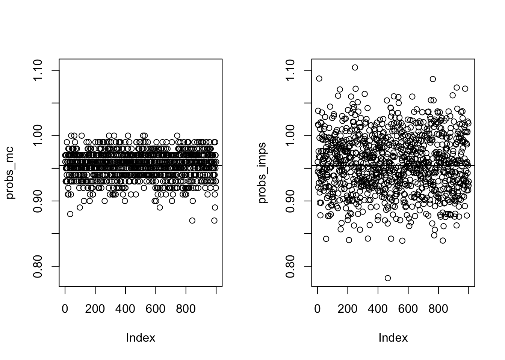
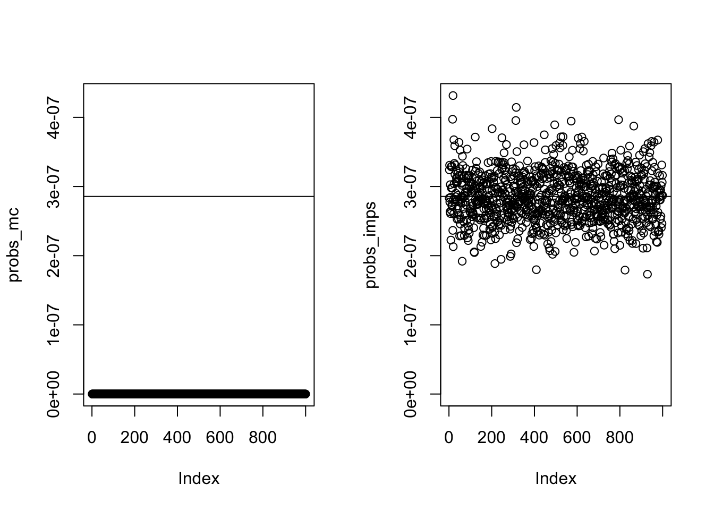
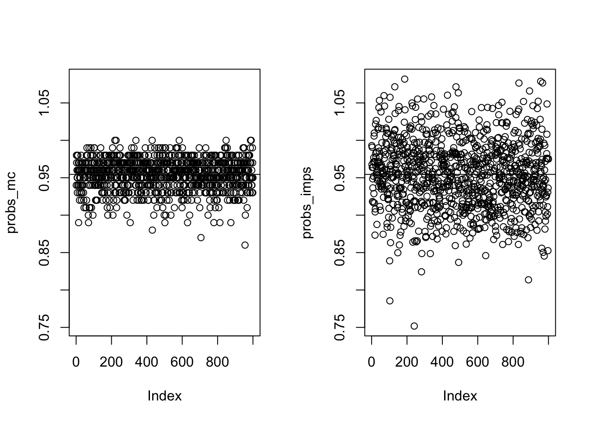
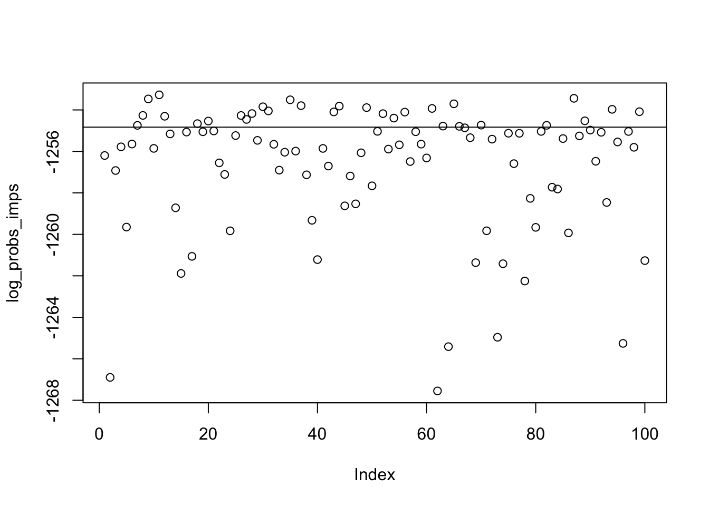
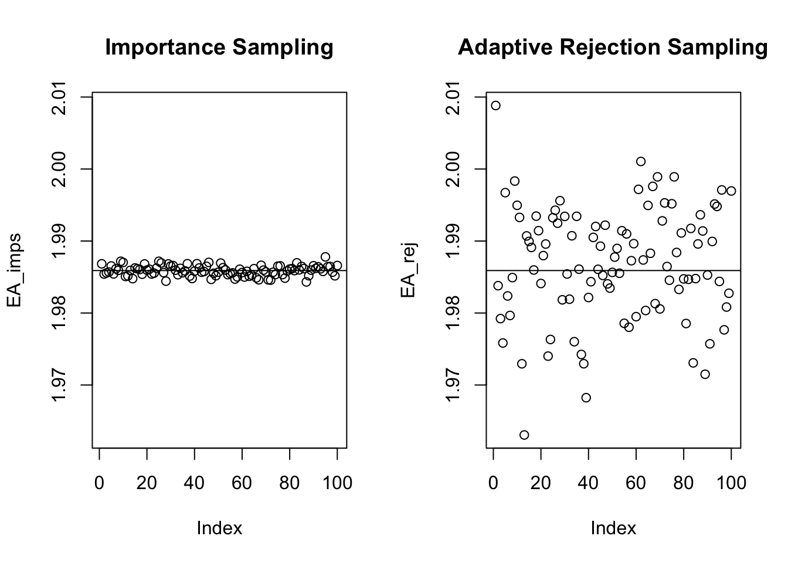
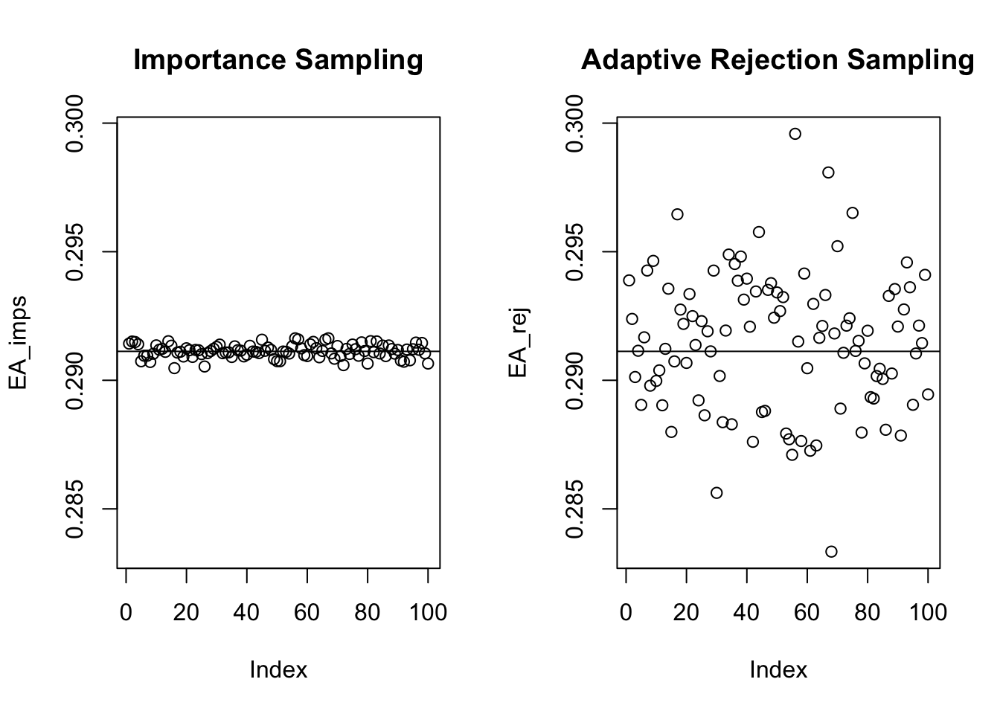
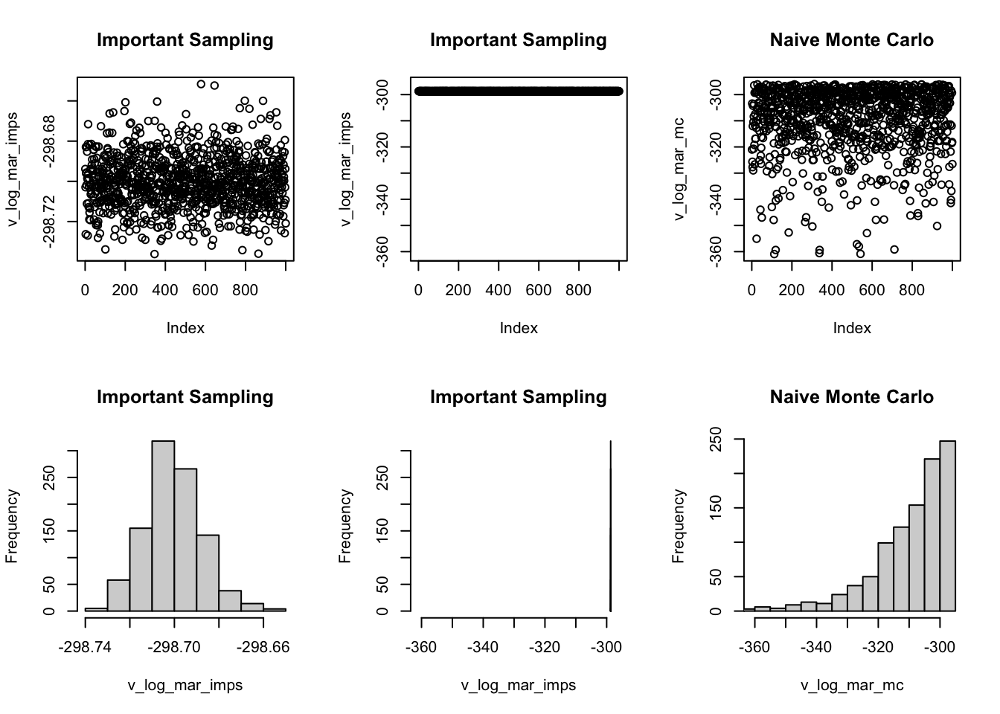

## a function computing the sum of numbers represented with logarithm
## lx --- a vector of numbers, which are the log of another vector x.
## the log of sum of x is returned
log_sum_exp <- function(lx)
{ mlx <- max(lx)
mlx + log(sum(exp(lx-mlx)))
}
## estimating the probability P(X in A) for X ~ N(0,1)
## by sampling from N(0,1)
est_normprob_mc <- function(A,iters_mc)
{
X <- rnorm(iters_mc)
mean((X > A[1]) * (X<A[2]))
}
## estimating the probability P(X in A) for X ~ N(0,1)
## by sampling from Unif(A[1],A[2])
est_normprob_imps <- function(A, iters_mc)
{
X <- runif(iters_mc,A[1],A[2])
mean(dnorm(X))*(A[2]-A[1])
}
## estimating the probability P(X in A) for X ~ N(0,1)
## by sampling from Unif(A[1],A[2])
est_log_normprob_imps <- function(A, iters_mc)
{
X <- runif(iters_mc,A[1],A[2])
log_sum_exp(dnorm(X,log = TRUE))-log(iters_mc)+ log(A[2]-A[1])
}11 Importance Sampling
12 Estimate Normal Probability P(a < X < b) Using Importance Sampling
12.1 Test 1
A <- c(-2,2)
tp <- pnorm (A[2]) - pnorm (A[1])
probs_mc <- replicate(1000,est_normprob_mc(A,100))
probs_imps <- replicate(1000,est_normprob_imps(A,100))
par(mfrow = c(1,2))
ylim <- range (probs_mc, probs_imps)
plot(probs_mc, ylim = ylim); abline (h=tp)
plot(probs_imps, ylim = ylim); abline (h=tp)
mean((probs_mc-tp)^2)[1] 0.00042771mean((probs_imps-tp)^2)[1] 0.00205926912.2 Test 2
A <- c(5,6)
tp <- pnorm (A[2]) - pnorm (A[1])
probs_mc <- replicate(1000,est_normprob_mc(A,100))
probs_imps <- replicate(1000,est_normprob_imps(A,100))
par(mfrow = c(1,2))
ylim <- range (probs_mc, probs_imps)
plot(probs_mc, ylim = ylim); abline (h=tp)
plot(probs_imps, ylim = ylim); abline (h=tp)
mean((probs_mc-tp)^2)[1] 8.160448e-14mean((probs_imps-tp)^2)[1] 1.324748e-1512.3 Test 3
A <- c(-2,2)
tp <- pnorm (A[2]) - pnorm (A[1])
probs_mc <- replicate(1000,est_normprob_mc(A,100))
probs_imps <- replicate(1000,est_normprob_imps(A,100))
par(mfrow = c(1,2))
ylim <- range (probs_mc, probs_imps)
plot(probs_mc, ylim = ylim); abline (h=tp)
plot(probs_imps, ylim = ylim); abline (h=tp)
mean((probs_mc-tp)^2)[1] 0.0004498998mean((probs_imps-tp)^2)[1] 0.00214480412.4 Test 4: An example of computing a underflow probability
A <- c(50,100)
#A method that cannot compute so small probability
tp1 <- pnorm (A[2]) - pnorm (A[1]); log(tp1)[1] -Inf#The reason is that pnorm(A[1]) is so close to 1, or pnorm(-A[1]) underflow
pnorm (A[1]) [1] 1log(pnorm(A[1]))[1] 0#Instead, we can use this way to compute the log probability
log_minus_exp <- function (la, lb) la + log (1-exp(lb-la))
la <- pnorm(-A[1], log=TRUE); la[1] -1254.831lb <- pnorm(-A[2], log=TRUE); lb[1] -5005.524log_tp2 <- log_minus_exp(la, lb); log_tp2[1] -1254.831#We still use the same importance sampling procedure, but taking care of the underflow problem in dnorm for values in (A[1],A[2])
log_probs_imps <- replicate(100,est_log_normprob_imps(A,1000)); log_probs_imps [1] -1256.198 -1266.897 -1256.922 -1255.780 -1259.649 -1255.645 -1254.745
[8] -1254.265 -1253.470 -1255.855 -1253.272 -1254.306 -1255.157 -1258.720
[15] -1261.885 -1255.067 -1261.060 -1254.661 -1255.053 -1254.536 -1255.014
[22] -1256.553 -1257.110 -1259.829 -1255.236 -1254.269 -1254.458 -1254.175
[29] -1255.467 -1253.847 -1254.048 -1255.657 -1256.903 -1256.039 -1253.512
[36] -1255.986 -1253.794 -1257.128 -1259.322 -1261.217 -1255.856 -1256.707
[43] -1254.095 -1253.815 -1258.625 -1257.187 -1258.528 -1256.067 -1253.889
[50] -1257.660 -1255.033 -1254.179 -1255.888 -1254.394 -1255.683 -1254.105
[57] -1256.489 -1255.052 -1255.650 -1256.316 -1253.929 -1267.550 -1254.780
[64] -1265.414 -1253.705 -1254.791 -1254.862 -1255.339 -1261.365 -1254.733
[71] -1259.827 -1255.409 -1264.962 -1261.416 -1255.124 -1256.590 -1255.127
[78] -1262.250 -1258.265 -1259.662 -1255.036 -1254.742 -1257.727 -1257.813
[85] -1255.381 -1259.929 -1253.441 -1255.253 -1254.525 -1254.972 -1256.475
[92] -1255.078 -1258.462 -1253.972 -1255.545 -1265.258 -1255.039 -1255.802
[99] -1254.086 -1261.265plot (log_probs_imps); abline (h = log_tp2)
13 Estimate E(a(X)) of Truncated Normal Using Importance Sampling
13.1 Estimating Function
## compute E(a) with importance sampling
est_tnorm_imps <- function(a, A, iters_mc)
{
X <- runif(iters_mc,A[1],A[2])
W <- dnorm (X)
ahat <- sum (a(X) * W) / sum (W)
attr(ahat, "effective sample size") <- 1/sum((W/sum(W))^2)
ahat
}
## a generic function for approximating 1-D integral with midpoint rule
## the logarithms of the function values are passed in
## the log of the integral result is returned
## log_f --- a function computing the logarithm of the integrant function
## range --- the range of integral varaible, a vector of two elements
## n --- the number of points at which the integrant is evaluated
## ... --- other parameters needed by log_f
log_int_mid <- function(log_f, range, n,...)
{ if(range[1] >= range[2])
stop("Wrong ranges")
h <- (range[2]-range[1]) / n
v_log_f <- sapply(range[1] + (1:n - 0.5) * h, log_f,...)
log_sum_exp(v_log_f) + log(h)
}
## compute E(a) with midpoint rule
est_tnorm_mid <- function (a, A, iters_mc)
{
log_f <- function (x) dnorm (x, log = T) + log (a(x))
exp(log_int_mid (log_f, A, iters_mc) ) / (pnorm (A[2]) - pnorm (A[1]))
}
library (ars)
## a direct rejection sampling for truncated normal
sample_tnorm_drs <- function (n, lb = -Inf, ub = Inf)
{
x <- rep (0, n)
for (i in 1:n)
{
rej <- TRUE
while (rej)
{
x[i] <- rnorm (1)
if (x[i] >= lb & x[i] <= ub) rej <- FALSE
}
}
x
}
## sample from truncated normal using ars package
sample_tnorm_ars <- function (n, lb, ub)
{
logf <- function (x) dnorm (x, log = TRUE) ## define log density
fprima <- function (x) -x ## define derivative of log density
ars (10000, f = logf, fprima = fprima,
x = c(lb, (lb + ub )/2, ub), # starting points
lb = TRUE, ub = TRUE, xlb = lb, xub = ub) # boundary of log density
}13.2 Test 1
## define the function a
a <- function (x) x^2
interval <- c(1,2)
A <- est_tnorm_mid (a, interval, 100000) ## midpoint rule
## estimate E(a) with rejection sampling
system.time(
{
rn_tnorm_ars <- sample_tnorm_ars (1000, interval[1],interval[2]) # draw samples from tnorm
mean (a (rn_tnorm_ars))
}
) user system elapsed
0.030 0.005 0.034 system.time(
est_tnorm_imps (a, interval, 1000000) ## importance sampling
) user system elapsed
0.024 0.002 0.027 ## simulation comparison of importance sampling and rejection sampling
times.imps <- system.time(
EA_imps <- replicate (100, est_tnorm_imps (a, interval, 1000000))
)
times.imps user system elapsed
3.156 0.215 3.381 times.rej <- system.time (
EA_rej <- replicate (100,
{ rn_tnorm_ars <- sample_tnorm_ars (1000, interval[1],interval[2])
mean (a (rn_tnorm_ars))
}
)
)
times.rej user system elapsed
3.441 0.279 3.725 par (mfrow = c(1,2))
ylim <- range (EA_imps, EA_rej)
plot (EA_imps, ylim = ylim, main = "Importance Sampling")
abline (h = A)
plot (EA_rej, ylim = ylim, main = "Adaptive Rejection Sampling")
abline (h = A)
mean ((EA_rej-A)^2)[1] 6.212722e-05mean ((EA_imps-A)^2)[1] 5.024207e-0713.3 Test 2
## define the function a
a <- function (x) x^2
interval <- c(-1,1)
A <- est_tnorm_mid (a, interval, 100000) ## midpoint rule
## estimate E(a) with rejection sampling
system.time(
{
rn_tnorm_ars <- sample_tnorm_ars (1000, interval[1],interval[2]) # draw samples from tnorm
mean (a (rn_tnorm_ars))
}
) user system elapsed
0.034 0.002 0.037 system.time(
est_tnorm_imps (a, interval, 1000000) ## importance sampling
) user system elapsed
0.028 0.001 0.030 ## simulation comparison of importance sampling and rejection sampling
times.imps <- system.time(
EA_imps <- replicate (100, est_tnorm_imps (a, interval, 1000000))
)
times.imps user system elapsed
2.782 0.192 2.980 times.rej <- system.time (
EA_rej <- replicate (100,
{ rn_tnorm_ars <- sample_tnorm_ars (1000, interval[1],interval[2])
mean (a (rn_tnorm_ars))
}
)
)
times.rej user system elapsed
3.577 0.273 3.860 par (mfrow = c(1,2))
ylim <- range (EA_imps, EA_rej)
plot (EA_imps, ylim = ylim, main = "Importance Sampling")
abline (h = A)
plot (EA_rej, ylim = ylim, main = "Adaptive Rejection Sampling")
abline (h = A)
mean ((EA_rej-A)^2)[1] 7.284687e-06mean ((EA_imps-A)^2)[1] 6.54218e-0814 Computing Log Marginalized Likelihood for Normal Models with Importance Sampling
14.1 Functions
## a function computing the sum of numbers represented with logarithm
## lx --- a vector of numbers, which are the log of another vector x.
## the log of sum of x is returned
log_sum_exp <- function(lx)
{ mlx <- max(lx)
mlx + log(sum(exp(lx-mlx)))
}
## computing the log probability density function of multivariate normal
## x --- a vector, the p.d.f at x will be computed
## mu --- the mean vector of multivariate normal distribution
## A --- the inverse covariance matrix of multivariate normal distribution
log_pdf_mnormal <- function(x, mu, A)
{ 0.5 * ( -length(mu)*log(2*pi) + sum(log(svd(A)$d)) - t(x-mu) %*% A %*% (x-mu) )
}
## the function for computing log likelihood of normal data
log_lik <- function(x,mu,w)
{ sum(dnorm(x,mu,exp(w),log=TRUE))
}
## the function for computing log prior
log_prior <- function(mu,w, mu_0,sigma_mu,w_0,sigma_w)
{ dnorm(mu,mu_0,sigma_mu,log=TRUE) + dnorm(w,w_0,sigma_w,log=TRUE)
}
## the function for computing the negative log of likelihood * prior
neg_log_post <- function(x, theta, mu_0,sigma_mu,w_0,sigma_w)
{ - log_lik(x,theta[1], theta[2]) -
log_prior(theta[1],theta[2],mu_0,sigma_mu,w_0,sigma_w)
}
## computing the log marginal likelihood using importance sampling with
## the posterior distribution approximated by the Gaussian distribution at
## its mode
log_mar_gaussian_imps <- function(x,mu_0,sigma_mu,w_0,sigma_w,iters_mc)
{ result_min <- nlm(f=neg_log_post,p=c(mean(x),log(sqrt(var(x)))),
hessian=TRUE,
x=x,mu_0=mu_0,sigma_mu=sigma_mu,w_0=w_0,sigma_w=sigma_w)
hessian <- result_min$hessian
mu <- result_min$estimate
## finding the multiplier for sampling from multivariate normal
Sigma <- t( chol(solve(hessian)) )
## draw samples from N(mu, Sigma %*% Sigma')
thetas <- Sigma %*% matrix(rnorm(2*iters_mc),2,iters_mc) + mu
## values of log approximate p.d.f. at samples
log_pdf_mnormal_thetas <- apply(thetas,2,log_pdf_mnormal,mu=mu,A=hessian)
## values of log true p.d.f. at samples
log_post_thetas <- - apply(thetas,2,neg_log_post,x=x, mu_0=mu_0,
sigma_mu=sigma_mu,w_0=w_0,sigma_w=sigma_w)
## averaging the weights, returning its log
log_sum_exp(log_post_thetas-log_pdf_mnormal_thetas) - log(iters_mc)
}
## we use Monte Carlo method to debug the above function
log_mar_gaussian_mc <- function(x,mu_0,sigma_mu,w_0,sigma_w,iters_mc)
{
## draw samples from the priors
mus <- rnorm(iters_mc,mu_0,sigma_mu)
ws <- rnorm(iters_mc,w_0,sigma_w)
one_log_lik <- function(i)
{ log_lik(x,mus[i],ws[i])
}
v_log_lik <- sapply(1:iters_mc,one_log_lik)
log_sum_exp(v_log_lik) - log(iters_mc)
}
## the generic function for finding laplace approximation of integral of 'f'
## neg_log_f --- the negative log of the intergrand function
## p0 --- initial value in searching mode
## ... --- other arguments needed by neg_log_f
bayes_inference_lap <- function(neg_log_f,p0,...)
{ ## looking for the mode and hessian of the log likehood function
result_min <- nlm(f=neg_log_f,p=p0, hessian=TRUE,...)
hessian <- result_min$hessian
neg_log_like_mode <- result_min$minimum
estimates <- result_min$estimate ## posterior mode
SIGMA <- solve(result_min$hessian) ## covariance matrix of posterior mode
sds <- sqrt (diag(SIGMA)) ## standard errors of each estimate
log_mar_lik <- ## log marginalized likelihood
- neg_log_like_mode + 0.5 * ( sum(log(2*pi) - log(svd(hessian)$d) ))
list (estimates = estimates, sds = sds, SIGMA = SIGMA, log_mar_lik = log_mar_lik)
}
## approximating the log of integral of likelihood * prior
bayes_inference_lap_gaussian <- function(x,mu_0,sigma_mu,w_0,sigma_w)
{ bayes_inference_lap(
neg_log_post,p0=c(mean(x),log(sqrt(var(x)))),
x=x,mu_0=mu_0,sigma_mu=sigma_mu,w_0=w_0,sigma_w=sigma_w
)
}14.2 Testing
## debugging the program
x <- rnorm(50)
log_mar_gaussian_imps(x,0,1,0,5,100)[1] -76.80087log_mar_gaussian_mc(x,0,1,0,5,10000)[1] -76.82122bayes_inference_lap_gaussian(x,0,1,0,5)$estimates
[1] 0.1162407245 0.0005725386
$sds
[1] 0.14010735 0.09999049
$SIGMA
[,1] [,2]
[1,] 1.963007e-02 -4.466037e-05
[2,] -4.466037e-05 9.998098e-03
$log_mar_lik
[1] -76.85979x <- rnorm(10) # another debug
log_mar_gaussian_imps(x,0,1,0,5,100)[1] -19.23285log_mar_gaussian_mc(x,0,1,0,5,10000)[1] -19.31662bayes_inference_lap_gaussian(x,0,1,0,5)$estimates
[1] -0.49896043 0.07151992
$sds
[1] 0.322456 0.223951
$SIGMA
[,1] [,2]
[1,] 0.103977875 0.005181208
[2,] 0.005181208 0.050154043
$log_mar_lik
[1] -19.27074## comparing importance sampling with Gaussian approximation with naive monte carlo
x <- rnorm(200)
bayes_inference_lap_gaussian(x,0,1,0,5)$estimates
[1] 0.02883374 0.03848643
$sds
[1] 0.07328752 0.05000228
$SIGMA
[,1] [,2]
[1,] 5.371060e-03 -5.277755e-07
[2,] -5.277755e-07 2.500228e-03
$log_mar_lik
[1] -298.7048v_log_mar_imps <- replicate(1000, log_mar_gaussian_imps(x,0,1,0,5,100))
v_log_mar_mc <- replicate(1000, log_mar_gaussian_mc(x,0,1,0,5,100))
par(mfcol=c(2,3))
xlim <- c(min(c(v_log_mar_imps,v_log_mar_mc)),max(c(v_log_mar_imps,v_log_mar_mc)))
plot(v_log_mar_imps, main="Important Sampling")
hist(v_log_mar_imps,main="Important Sampling")
plot(v_log_mar_imps, ylim = xlim, main="Important Sampling")
hist(v_log_mar_imps,main="Important Sampling",xlim=xlim)
plot(v_log_mar_mc,main="Naive Monte Carlo",ylim=xlim)
hist(v_log_mar_mc,main="Naive Monte Carlo",xlim=xlim)
## comparing variance of importance sampling and naive sampling
var (v_log_mar_imps)[1] 0.0001670053var (v_log_mar_mc)[1] 152.0216Comparing Monte Carlo variance of Importance sampling and Laplace Approximation
mean (v_log_mar_imps)[1] -298.7003bayes_inference_lap_gaussian(x,0,1,0,5)$estimates
[1] 0.02883374 0.03848643
$sds
[1] 0.07328752 0.05000228
$SIGMA
[,1] [,2]
[1,] 5.371060e-03 -5.277755e-07
[2,] -5.277755e-07 2.500228e-03
$log_mar_lik
[1] -298.7048We see that Laplace approximation is really good for this problem, but it may not be good for other problems in which the posterior cannot be approximated by Gaussian.